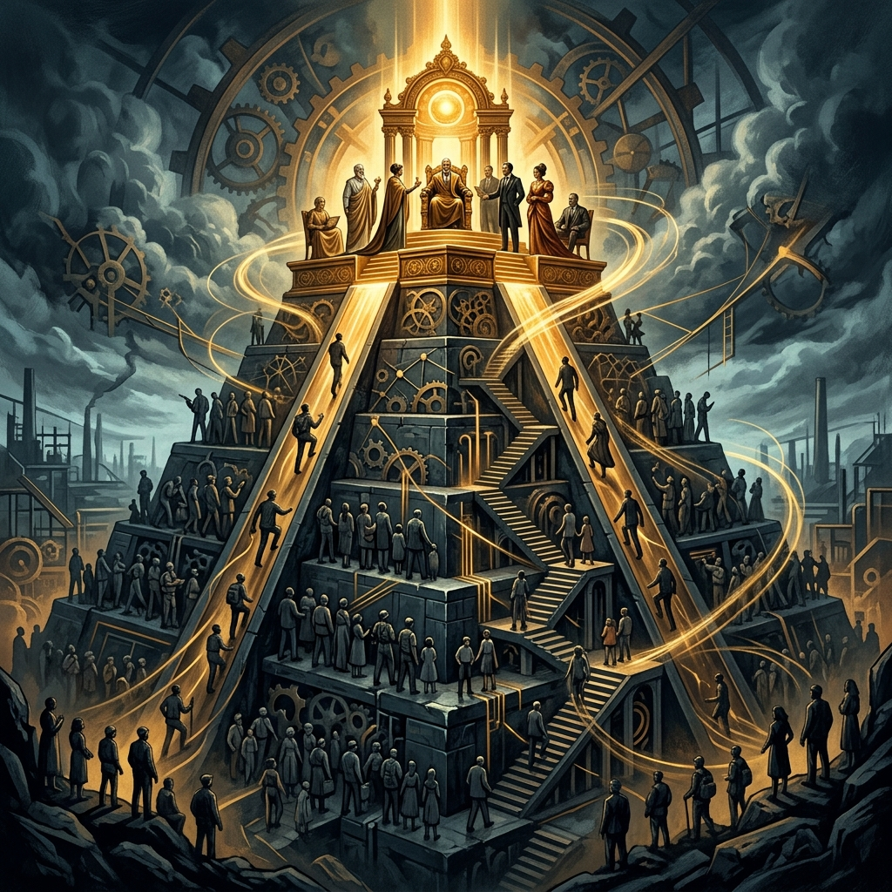
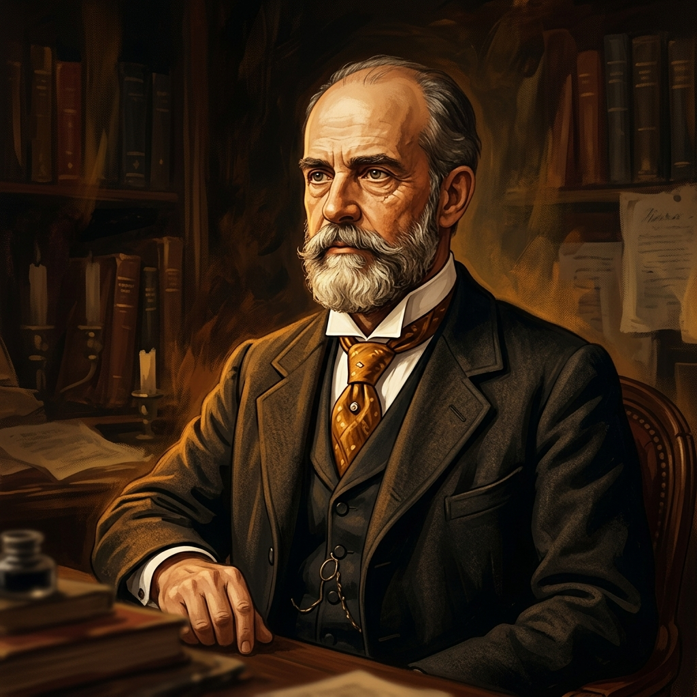

Teorija Elita
Tko zapravo vlada društvom? Demokracija kaže – narod. Ali talijanski sociolog Vilfredo Pareto tvrdio je nešto potpuno drugačije: društvom uvijek vlada mala skupina ljudi na vrhu – elite. Pogledajmo zašto.
Kako tri perspektive gledaju na vlast?
Prije nego uđemo u Paretovu teoriju, prisjetimo se: svaka od triju velikih socioloških perspektiva drugačije objašnjava tko ima moć i zašto.
Funkcionalizam
"Vlast postoji jer je društvu potrebna."
Netko mora donositi odluke da sustav funkcionira. Političari, sudci i direktori imaju moć jer društvo treba vođe – isto kao što tijelo treba mozak. Vlast je korisna funkcija koja održava red i stabilnost.
Konfliktna teorija
"Vlast je oružje bogatih protiv siromašnih."
Marx bi rekao da oni koji imaju novac kontroliraju zakone, medije i politiku. Vlast nije tu da pomogne svima – nego da bogati ostanu bogati. Sve institucije štite interese vladajuće klase.
Interakcionizam
"Vlast je ono što ljudi vjeruju da jest."
Interakcionista zanima što konkretno pojedinac radi u odnosu na vlast. Izlazi li na izbore? Ide li na sjednicu mjesnog odbora? Potpisuje li peticije? Razgovara li s lokalnim vijećnikom? Promatra kako se vlast gradi kroz svakodnevne male radnje običnih ljudi.

Vilfredo Pareto (1848 – 1923)
Talijanski ekonomist i sociolog koji je promatrao društvo kroz brojke i činjenice. Nije vjerovao u idealizam – bio je tvrd realista. Evo njegove životne priče u kratkim crtama:
Studirao inženjerstvo i matematiku u Torinu. Upravo ta matematička preciznost oblikovala je njegov pogled na društvo – sve je pokušao izraziti formulama i krivuljama.
Proučavajući raspodjelu bogatstva u Italiji, otkrio je da 20% ljudi posjeduje 80% bogatstva. Ovaj obrazac (danas poznat kao "Pareto princip") vidio je svugdje – u ekonomiji, politici i društvu.
"Traktat o općoj sociologiji" (1916) – masivno djelo u kojem iznosi svoju teoriju o elitama, logičnim i nelogičnim djelovanjima te o tome zašto mase nikada zapravo ne vladaju.
Demokratija je mit. U svakom društvu – bilo monarhiji, demokraciji ili diktaturi – uvijek vlada mala grupa na vrhu. Mijenja se samo tko je u toj grupi, ali činjenica da elite postoje – nikada se ne mijenja.
Paretova Piramida Društva
Prema Paretu, svako društvo je podijeljeno na dva sloja. Nema iznimaka – od drevnog Rima do moderne Hrvatske.
Kruženje elita
👑 Vladajuća elita
Mala skupina koja stvarno donosi odluke – političari, direktori, generali. To su ljudi na vrhu koji kontroliraju resurse, zakone i institucije.
🎯 Nevladajuća elita
Sposobni i talentirani ljudi koji bi mogli vladati, ali trenutno ne vladaju. Čekaju svoju priliku. Kad vladajuća elita oslabi – oni preuzimaju!
👥 Mase (ne-elita)
Velika većina društva. Prema Paretu, mase su pasivne i neorganizirane – njima se upravlja, one ne upravljaju. Surovo? Da. Ali Pareto je bio poznat po realističnom (nekim riječima ciničnom) pogledu.
Dva Tipa Vladara: Lisice i Lavovi
Pareto je podijelio elite u dvije vrste prema tome kako vladaju. Inspirirao se Machiavellijem i njegovom knjigom "Vladar".
Lisice
"Vladaju lukavstvom i pregovorima."
- ▸Koriste diplomaciju, manipulaciju i uvjeravanje
- ▸Sklapaju saveze i kompromise
- ▸Izbjegavaju otvoreni sukob – vole pregovarati iza zatvorenih vrata
- ▸Primjer: političari koji obećavaju na izborima, lobisti, PR stručnjaci
Lavovi
"Vladaju silom i autoritetom."
- ▸Koriste silu, odlučnost i vojnu moć
- ▸Donose čvrste odluke bez puno pregovaranja
- ▸Vjeruju u red, disciplinu i stabilnost
- ▸Primjer: vojni vođe, revolucionari, autoritarni predsjednici
💡 Ključni uvid: Prema Paretu, zdrav sustav treba ravnotežu između lisica i lavova. Ako vladaju samo lisice – sustav postane korumpiran. Ako vladaju samo lavovi – sustav postane tiranija. Kada jedna vrsta oslabi, druga preuzima vlast – i to je srž kruženja elita!
Kruženje Elita (Cirkulacija)
Paretova najpoznatija ideja: elite se neprestano smjenjuju. Nijedna vladajuća skupina nije vječna. Pogledajmo kako to funkcionira:
Nova elita dolazi na vlast
Jedna grupa (npr. lavovi) osvaja moć – revolucijom, izborima ili ratom. U početku su energični i odlučni.
Elita se ustaljuje i jača
Vremenom postaju udobni na vlasti. Počinju uživati u privilegijama i bogaćenju. Gube dodir s realnošću.
Elita degenerira
Postaju lijeni, korumpirani ili nesposobni. Više ih ne zanimaju problemi običnog naroda. Sustav počinje pucati.
Nova elita ih zamjenjuje!
Sposobniji i energičniji izazivači (nevladajuća elita) preuzimaju vlast. I ciklus počinje ispočetka.
Pareto princip: 80/20 raspodjela bogatstva